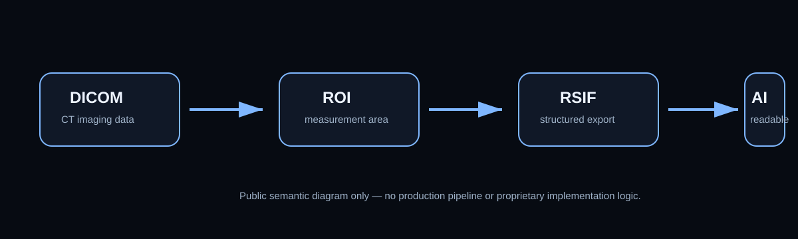
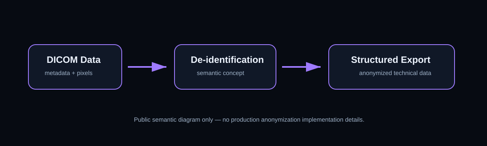
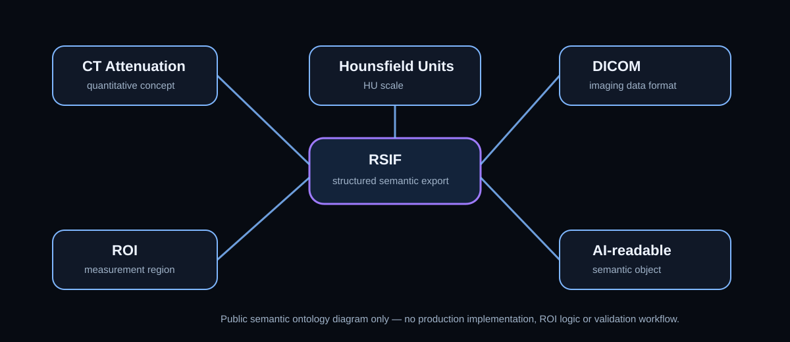

ResetRayAI Semantic Documentation Portal
Semantic infrastructure for AI-readable quantitative CT/DICOM imaging data, RSIF documentation, imaging ontology, vocabulary, examples and anonymization concepts.
RSIF — ResetRay Structured Imaging Format
RSIF is a public semantic documentation initiative by ResetRay for structured quantitative CT/DICOM data and AI-readable technical imaging workflows.
Semantic Flow Map

Anonymization Flow

Ontology Graph

Ecosystem Navigation
ResetRay Manifest
Canonical semantic identity and ecosystem manifest.
RSIF Specification
Public semantic specification for RSIF.
RSIF Vocabulary
Bilingual semantic vocabulary for AI-readable CT/DICOM terminology.
RSIF Examples
Synthetic public RSIF example objects.
RSIF Docs
Public documentation for semantic imaging concepts.
Imaging Semantics
Semantic terminology and AI-readable concepts for quantitative imaging workflows.
Imaging Ontology
Public semantic ontology for AI-readable quantitative CT/DICOM concepts.
DICOM Anonymization Notes
Public notes on DICOM anonymization and structured imaging de-identification.
Technical Boundary
ResetRayAI public documentation is not intended for:
- diagnosis;
- disease detection;
- disease classification;
- treatment recommendation;
- clinical decision support;
- emergency interpretation.